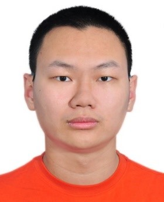

|
JIANG Maiqi |
|  |
M.Sc. Information Technology Student Department of Computing, The Hong Kong Polytechnic University Phone: +86 18923818690 Email: maiqi.jiang@comp.polyu.hk Fields: Computer Vision, Graph Neural Network Stack: Python, Matlab, Pytorch, transformers, PyG, DGL, OpenCV Tools: Git, Docker, Pycharm, Linux, Terminal, MiniConda IELTS: 6.5 Relevant: Image Classification and Segmentation, Attention, Multiple Instance Learning, Few-shot Learning, Heterogeneous GNN, Differential NAS |
Experience
[2021 - Now] Heterogeneous Network learning (The Hong Kong Polytechnic University)
Submitted a paper on AAAI as second author (the notification of final acceptance or rejection on Nov.), guided by Dr HUANG Xiao
Deep analysed on problems on Heterogeneous Graph Neural Networks and explored a new framework for Heterogeneous Information Network
Redesigned the experiment setting and repoduced the results of the state of the art models
[2018 - 2021] Semi-supervised Learning on Whole Slide Images (Northeastern University, China)
Bachelor Thesis: A weakly supervised framework driven by eye-tracking in pathological diagnosis, guided by Dr CUI Xiaoyu, Chair of Biomedical Informatics Department
Improved the coding skill of deep learning. Learned prior algorithms of Computer Vision
[2018 - 2020] Mathematical Contest in Modeling
Won Honorable Mention twice on Mathematical Contest In Modeling / Interdisciplinary Contest In Modeling
Won the third prize of Liao Ning Province twice on China Undergraduate Mathematical Contest in Model
Opened my mind for solving problems and designing models. Built a good base on data processing, analysis and mining
Education
[2021 - Now] Master of Science in Information Technology (The Hong Kong Polytechnic University)
learnt knowledge of different areas of deep learning, such as NLP, big data, CV and GNN
Enhanced my coding ability on code style, project structure, Agile, web and data processing
[2017 - 2021] Bachelor of Biomedical Engineering (Northeastern University, China)
Studyed basis of computer science and electrical engineering, such as C/C++, data structure, and Digital Signal Processing
Practiced coding ability on digital image processing, especially for medical image
Self Evaluation
Creativity and Practical Ability, such as for neural network design and implement
Hard-working and Self-motivated. Be interested in magic and challenges of deep laerning
Code Repository
Baselines for HIN: https://github.com/themaigod/HINBaselines
WSI Process: https://github.com/themaigod/WSIGeneralProcess
WSI with Gaze Processing: https://github.com/themaigod/WSI-with-Gaze-Processing
WSI with Gaze Modeling: https://github.com/themaigod/WSI-with-Gaze-Modeling
Passed Work Visualization
Training on WSI with Gaze: Region of Model Interest and Model Prediction of Tumor Possibility
COMP5434 Big Data Computing Group Project: Influence of Non-iid
COMP5541 Machine Learning and Data Analytics Group Project: Image Classification Demo
COMP5523 Computer Vision and Image Processing LAB: Most possible straight lines by Hough, Panorama Stitching
COMP5241 Software Engineering and Development Group Project: Prototype and Video
COMP5511 Artificial Intelligence Concepts Group Project: Analysis for three DL Packages
COMP5423 Natural Language Processing Group Project (static web whithout backend): Text Emotion and Question Answering
{kind=link}
{kind=link}
{kind=link}
{kind=link}
{kind=link}
{kind=link}
{kind=link}